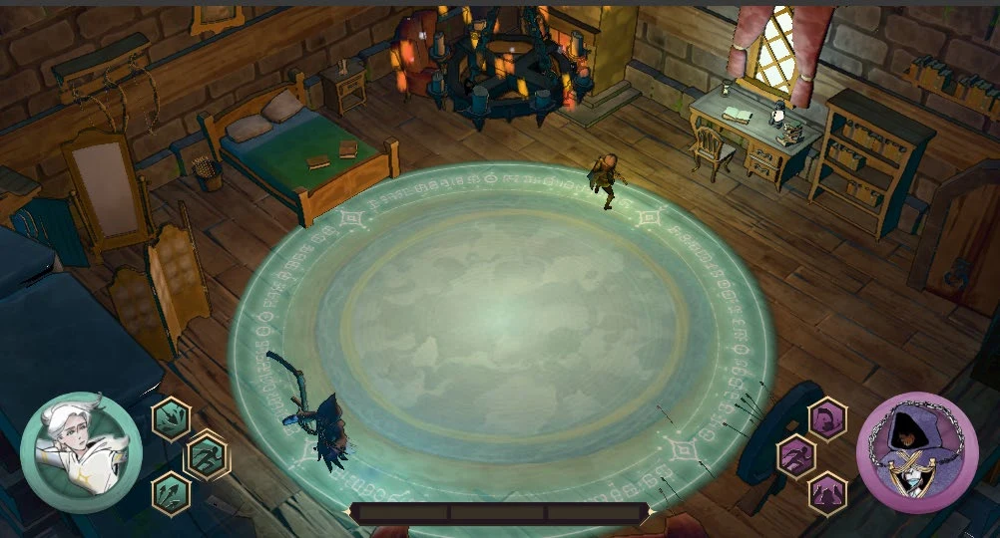
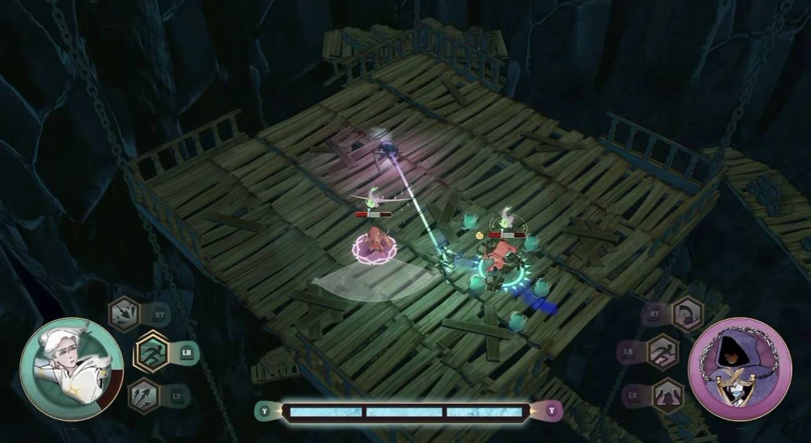
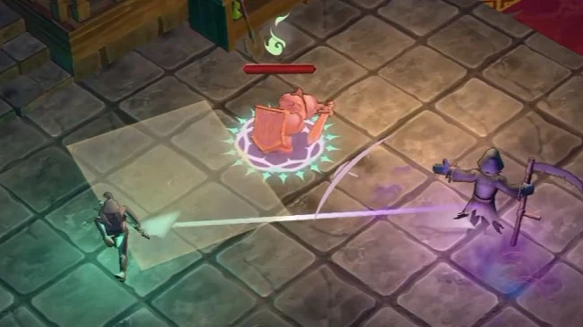
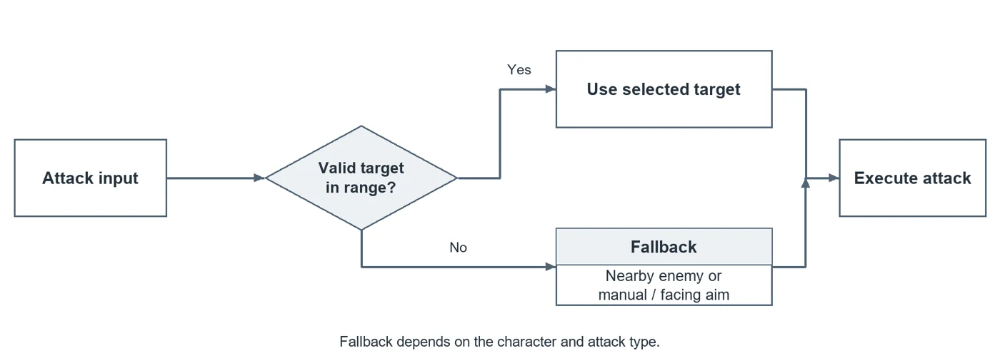
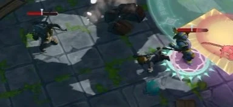
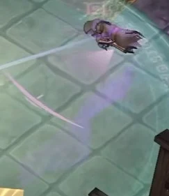
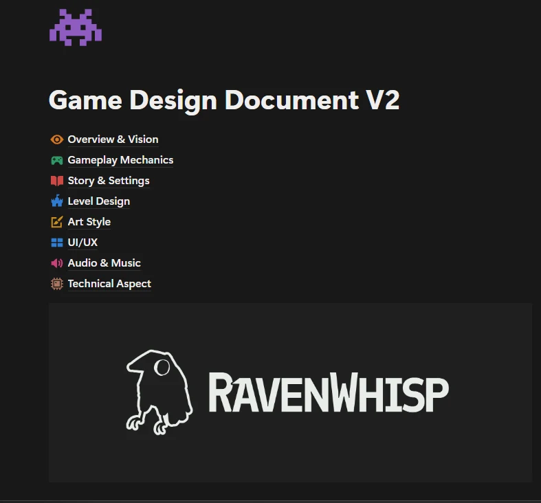
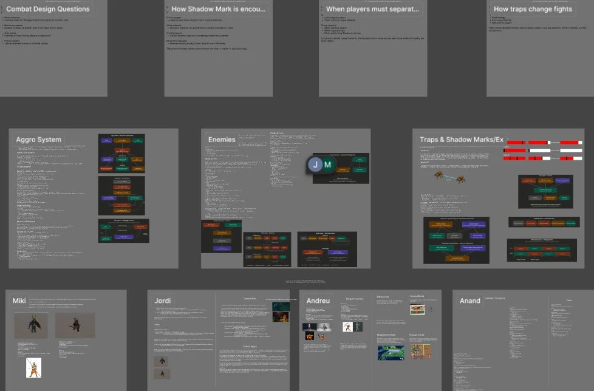
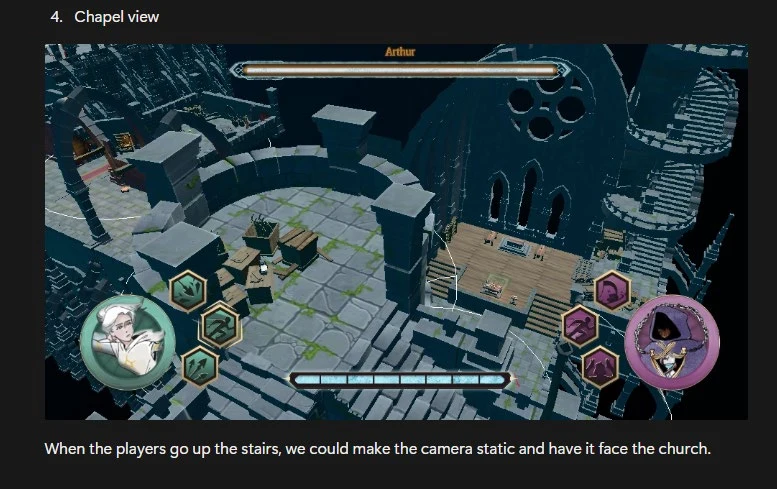

Gameplay programming
The Bound
Implemented distance-based damage and a warning near the safe-area limit, replacing the original instant-kill zone.
PROJECT BREAKDOWN
My gameplay programming, game design and integration work on our cooperative action game.
MY CONTRIBUTIONS
Selected work · click any image to enlarge

Gameplay programming
Implemented distance-based damage and a warning near the safe-area limit, replacing the original instant-kill zone.

Gameplay programming
Built combat areas and the first elevator sequence: activation, two waves, a rest stop and two further waves.

Gameplay programming
Added hit highlights, shake and ability haptics; refined enemy-death UI, pickup timing and breakable-object interactions.

Gameplay programming
Adjusted Death’s area charge and nearby-target fallback, plus Lyriel’s wider charged shot and manual no-target aiming.

Gameplay programming
Added configurable barrier strength and attack restrictions, then separated the behavior into a reusable component. Also prototyped linked enemies; that variant was cut before release.

Gameplay programming
Implemented Death’s dash ability to close distance and damage enemies along its path.

Gameplay integration
Connected the menu to video playback and Level 1, with hold-to-skip input and a post-skip loading image.

Design & coordination
Developed and maintained the GDD, coordinated milestone tasks, followed up with the design team and prepared design meetings.

Collaborative design
Co-designed enemy roles with Jordi, Arnau and Anand, combining individual proposals into a shared roster.

Design & documentation
Documented framing and transitions with annotated game views. Gameplay programmers handled implementation.
Also integrated levels, prefabs, enemies, HUD elements, tutorials and popups into game scenes.